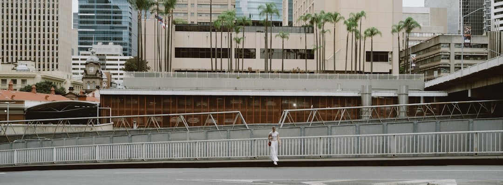

For a Brisbane retaining wall, the useful starting facts are height, length, what sits above the wall and site access. QLD Retaining and Fencing says timber sleeper work is roughly around $300-$450+ as an indicative guide, while final cost depends on material and wall face area. Its published service covers Brisbane, Ipswich, Gold Coast and Sunshine Coast, with approval triggers, engineering, drainage and fencing considered before quoting.
For homeowners comparing retaining wall installation brisbane options, the practical question is how the wall, fence, drainage, approvals and access conditions fit together on the same sloping site.
Retaining Wall Installation Brisbane Explained
QLD Retaining and Fencing frames most retaining jobs as a combined ground and boundary problem: a wall holding soil back, often with a fence that must sit on or near it. That is the right lens for sloped blocks, older cut-and-fill yards and boundary lines where access, height and what sits behind the wall can change the quote.
The first inspection question is not simply whether timber, concrete sleeper or block looks better. It is whether the wall is supporting garden soil, a driveway, a pool area or a fence line. The source page notes that a fence on a retaining wall is assessed on combined height, and that a driveway or pool can add surcharge load behind the wall face.
- Record the rough wall height and length before requesting a quote.
- Note whether an old wall is leaning, bulging or rotted.
- Tell the contractor what sits above or behind the wall.
- Describe truck access, excavation limits and where spoil could be removed.
Material choices should follow load and setting
The published service list separates timber sleeper, concrete sleeper and core-filled besser block retaining walls. Timber sleeper walls are described as a common entry point for garden edges and lower cuts. Concrete sleeper walls are positioned for longer life reinforced panels between galvanised posts. Core-filled besser block is described as steel-reinforced masonry for taller structural retaining where timber and segmental block fall short.
That gives homeowners a practical comparison path. For a low garden terrace, the decision may be budget, appearance and service life. For a taller wall, a boundary fence above, or load from a driveway, the quote needs to show how engineering, post spacing, backfill and drainage are being treated. A separate Brisbane retaining wall planning guide can help readers compare the same decision from another checklist angle.
Approvals and engineering are quote inputs
The source page repeatedly puts approval triggers before price. That is useful because a neat square metre rate can hide the conditions that actually affect the job. A wall may need different handling when it is taller, close to a boundary, carries a fence, holds a driveway or relates to a pool barrier. The homeowner does not need to solve those rules alone, but the quote should show they were checked.
Ask whether the contractor has considered council approval, engineering, drainage and fencing together. The source states that matched retaining wall and fencing contractors hold the relevant QBCC licence class for the job, and that compliance-first quotes account for real council approval and engineering triggers rather than a one-size estimate. For readers, the useful evidence is a written, itemised quote that names excavation, drainage and backfill instead of burying them in a lump sum.
Drainage belongs in the structure conversation
The source page treats subsoil drainage as structural on every retaining wall quote. That is a strong buying signal because drainage, backfill and the wall face work as one system. A cheaper quote that describes only sleepers, posts or blockwork may be hard to compare with one that includes excavation, drainage material, backfill and reinstatement.
For retaining wall installation brisbane projects on older or sloping blocks, ask where water is expected to go after rain, how the back of the wall will be drained, and whether the finish leaves room for the fence line. Do not accept a vague promise that the site will be made good. Ask for the drainage and backfill scope in writing, especially when replacing an old timber wall that has moved over wet seasons.
Who this applies to
This guide applies to homeowners planning a retaining wall, a fence that depends on a wall, or a combined boundary upgrade across the areas named by the source: Brisbane, Ipswich, Gold Coast and Sunshine Coast. It is especially relevant where a block falls away, an older timber sleeper wall is reaching the end of its life, or a pool barrier, driveway gate or boundary fence needs to line up with the retaining work.
It is less useful for readers seeking a standalone decorative garden edge with no height, load, fencing or drainage questions. Even then, the same discipline helps: measure the face area, describe access, ask what approvals are triggered and request a written quote that separates the major work items.
- Measure the wall face. Estimate height and length because the source says cost depends on material and wall face area.
- Map the load. Note fences, driveways, pools and ground levels behind the wall before asking for a quote.
- Check approval triggers. Ask whether council approval and engineering triggers have been checked for the actual site.
- Compare itemised quotes. Look for excavation, drainage, backfill and fencing details as separate quote items.
| Option | Where it tends to fit | Quote questions to ask |
|---|---|---|
| Timber sleeper | Garden edges and lower cuts, described as a common entry point | What treatment grade is used, how drainage is included, and when replacement may be wiser than repair |
| Concrete sleeper | Long-life reinforced panels between galvanised posts for taller Brisbane and hinterland cuts | How posts, panels, excavation, backfill and fence alignment are itemised |
| Core-filled besser block | Taller structural retaining where timber and segmental block fall short | What engineering, reinforcement, drainage and finish are included |
Common questions
How much should a Brisbane retaining wall cost? The source gives a rough indicative timber sleeper guide of around $300-$450+. It also says cost depends on material and wall face area, so height times length is the first comparison point.
Can the fence and retaining wall be quoted together? Yes. The source page says many sloped blocks involve both a wall and a fence, and that quoting them together matters when the fence sits on the wall or affects combined height.
Which wall material is best? There is no single best material in the supplied information. Timber sleeper, concrete sleeper and core-filled besser block are each presented for different wall heights, loads and structural needs.
What should be included in a written quote? Ask for excavation, drainage and backfill to be itemised, along with the wall material and any fencing component. The source says written quotes should account for approval and engineering triggers on the actual site.
This guide covers practical quote, material, drainage and approval questions for retaining wall and fencing projects in the SEQ areas named by the source.